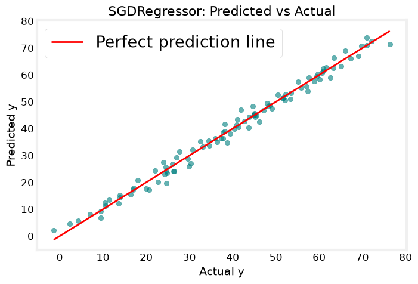

import numpy as np
import matplotlib.pyplot as plt
from sklearn.linear_model import SGDRegressor
from sklearn.preprocessing import StandardScaler
np.set_printoptions(precision=2)
plt.style.use('/Users/cheerupdimbo/Documents/ds-sprint-july/ds-sprint-july/week3_ml_core/deeplearning.mplstyle')
Using a simple synthetic dataset with 2 features so the pattern is easy to follow — swap this for your own X_train, y_train (e.g. HDB or SECOM data) once you’re comfortable with the flow.
np.random.seed(1)
X_train = np.random.rand(100, 2) * 10 # 100 examples, 2 features, values 0-10
y_train = 3*X_train[:,0] + 5*X_train[:,1] + np.random.normal(0, 2, 100) # true relationship + noise
StandardScaler() — scikit-learn’s built-in tool for z-score normalization. It’s the library equivalent of the zscore_normalize_features function you wrote by hand earlier — same math (\(\frac{x - \mu}{\sigma}\)), just implemented as a reusable object instead of a standalone function.
.fit_transform(X_train) — Does two things in one call: .fit(X_train) computes and internally stores \(\mu\) and \(\sigma\) for each column of X_train; .transform(X_train) then applies the normalization formula using those stored values, returning the scaled array. This combo is a shortcut for calling .fit() then .transform() separately.
Why the scaler object itself matters (not just the output array) — scaler now remembers the \(\mu\), \(\sigma\) it computed from X_train. This matters later: when you get new/unseen data (e.g. a house not in your training set), you must scale it using the same \(\mu\), \(\sigma\) from training — not recompute a fresh mean/std from the new data alone. That’s why you call .transform() (not .fit_transform()) on any new data afterward — this mirrors the “Implementation Note” from the z-score markdown you had earlier, now handled automatically by the object holding onto its fitted state.
scaler = StandardScaler()
X_train_scaled = scaler.fit_transform(X_train)
print(f"mean stored in scaler: {scaler.mean_}")
print(f"scale (std dev) stored in scaler: {scaler.scale_}")
mean stored in scaler: [4.49 5.22]
scale (std dev) stored in scaler: [3.11 2.96]
SGDRegressor — Linear regression trained using Stochastic Gradient Descent, rather than scikit-learn’s LinearRegression (which uses a direct linear-algebra solve, the normal equation). This is the scikit-learn model that most closely mirrors the gradient_descent function you wrote by hand — it iterates, updating w and b step by step using a learning-rate-controlled gradient update, rather than solving in one shot.
max_iter: the scikit-learn equivalent of yournum_iters— the cap on how many passes over the data it takes.eta0: the initial learning rate — equivalent to youralpha. (“SGD” stands for Stochastic Gradient Descent; “eta” is a common symbol for learning rate in optimization literature.).fit(X_train_scaled, y_train): trains the model — note it’s fit on the scaled data, not the rawX_train, since (like your own gradient descent) SGD is sensitive to feature scale.
sgd_model = SGDRegressor(max_iter=1000, eta0=0.01)
sgd_model.fit(X_train_scaled, y_train)
print(f"w (coefficients): {sgd_model.coef_}")
print(f"b (intercept): {sgd_model.intercept_}")
w (coefficients): [ 9.13 14.94]
b (intercept): [39.71]
.predict(X_train_scaled) — Same role as before: applies the learned w, b to compute \(f_{w,b}(x)\) for each row. Predicting on X_train_scaled here (not raw X_train) since the model was trained on scaled features — feeding it unscaled data would produce meaningless predictions.
y_pred = sgd_model.predict(X_train_scaled)
plt.figure(figsize=(8, 5))
plt.scatter(y_train, y_pred, color='teal', alpha=0.6)
plt.plot([y_train.min(), y_train.max()], [y_train.min(), y_train.max()], color='red', linewidth=2, label='Perfect prediction line')
plt.xlabel('Actual y')
plt.ylabel('Predicted y')
plt.title('SGDRegressor: Predicted vs Actual')
plt.legend()
plt.show()
